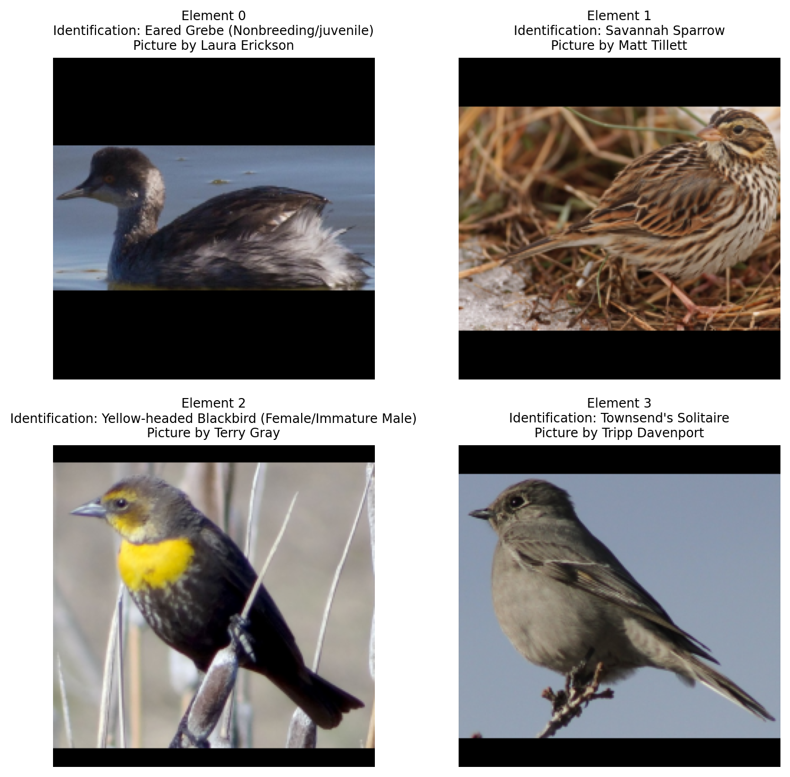
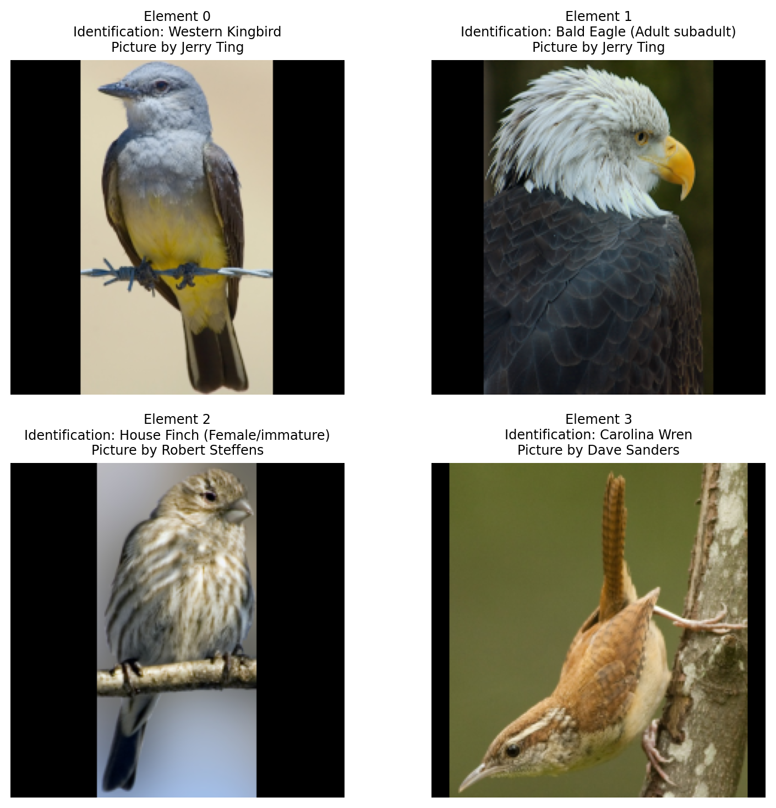

import os
import polars as pl
import imageio.v3 as iio
from skimage.transform import resize
import numpy as np
import matplotlib.pyplot as plt
import matplotlib.patches as patches
import grain.python as grain
import jax.numpy as jnp
img_dir = os.path.join(base_dir, "images")
bb_file = os.path.join(base_dir, "bounding_boxes.txt")
classes_translation_file = os.path.join(base_dir, "classes_fixed.txt")
class_labels_file = os.path.join(base_dir, "image_class_labels.txt")
img_file = os.path.join(base_dir, "images.txt")
photographers_file = os.path.join(base_dir, "photographers_fixed.txt")
sizes_file = os.path.join(base_dir, "sizes.txt")
train_test_split_file = os.path.join(base_dir, "train_test_split.txt")
bb = pl.read_csv(
bb_file,
separator=" ",
has_header=False,
new_columns=["UUID", "bb_x", "bb_y", "bb_width", "bb_height"]
)
classes = pl.read_csv(
class_labels_file,
separator=" ",
has_header=False,
new_columns=["UUID", "class"]
)
classes_translation = pl.read_csv(
classes_translation_file,
separator=" ",
has_header=False,
new_columns=["class", "id"]
)
img_paths = pl.read_csv(
img_file,
separator=" ",
has_header=False,
new_columns=["UUID", "path"]
)
photographers = pl.read_csv(
photographers_file,
separator=" ",
has_header=False,
new_columns=["UUID", "photographer"]
)
sizes = pl.read_csv(
sizes_file,
separator=" ",
has_header=False,
new_columns=["UUID", "img_width", "img_height"]
)
train_test_split = pl.read_csv(
train_test_split_file,
separator=" ",
has_header=False,
new_columns=["UUID", "is_training_img"]
)
classes_metadata = (
classes.join(classes_translation, on="class")
)
metadata = (
bb.join(classes_metadata, on="UUID")
.join(img_paths, on="UUID")
.join(photographers, on="UUID")
.join(sizes, on="UUID")
.join(train_test_split, on="UUID")
)
metadata_train = metadata.filter(pl.col("is_training_img") == 1)
class NABirdsDataset:
"""NABirds dataset class."""
def __init__(self, metadata_file, data_dir):
self.metadata = metadata_file
self.data_dir = data_dir
def __len__(self):
return len(self.metadata)
def __getitem__(self, idx):
img_path = os.path.join(
self.data_dir,
self.metadata.get_column('path')[idx]
)
img = iio.imread(img_path)
img_id = self.metadata.get_column('id')[idx].replace('_', ' ')
img_photographer = self.metadata.get_column('photographer')[idx].replace('_', ' ')
img_bb_x = self.metadata.get_column('bb_x')[idx]
img_bb_y = self.metadata.get_column('bb_y')[idx]
img_bb_width = self.metadata.get_column('bb_width')[idx]
img_bb_height = self.metadata.get_column('bb_height')[idx]
element = {
'image': img,
'id': img_id,
'photographer': img_photographer,
'bbx' : img_bb_x,
'bby' : img_bb_y,
'bbwidth' : img_bb_width,
'bbheight' : img_bb_height
}
return element
nabirds_train = NABirdsDataset(
metadata_train,
img_dir
)
class NormAndCast(grain.MapTransform):
"""Transform class to normalize and cast images to float32."""
def map(self, element):
element['image'] = jnp.array(element['image'], dtype=jnp.float32) / 255.0
return element
class BbCrop(grain.MapTransform):
"""Transform class to crop images to their bounding boxes."""
def map(self, element):
img = element['image']
bbx = element['bbx']
bby = element['bby']
bbwidth = element['bbwidth']
bbheight = element['bbheight']
img_cropped = img[bby:bby+bbheight, bbx:bbx+bbwidth]
element['image'] = img_cropped
return element
target = (224, 224)
class PaddingResize(grain.MapTransform):
"""Transform class to resize images to a given size with padding to avoid distortion."""
def map(self, element):
img = element['image']
h, w, _ = img.shape
target_h, target_w = target
# Calculate the scaling factor to fit the image inside the box
scale = min(target_h / h, target_w / w)
# Calculate the new dimensions of the image
new_h = int(h * scale)
new_w = int(w * scale)
# Resize the image to these new dimensions
img_resized = resize(img, (new_h, new_w), anti_aliasing=True)
# Create a black canvas (zeros) of the target size
out_img = np.zeros((target_h, target_w, img.shape[2]), dtype=img_resized.dtype)
# Place the resized image in the center of the canvas
y_offset = (target_h - new_h) // 2
x_offset = (target_w - new_w) // 2
out_img[y_offset:y_offset+new_h, x_offset:x_offset+new_w] = img_resized
element['image'] = out_img
return element
transformations = [NormAndCast(), BbCrop(), PaddingResize()]Data loader
Goal of a data loader
We can access elements of our Dataclass (as we did before to display some images) with:
for i, element in enumerate(nabirds_train):
print(element['image'].shape)
if i == 3:
break(680, 1024, 3)
(819, 1024, 3)
(768, 1024, 3)
(817, 1024, 3)Grain DataLoaders
- Source:
- Transforms:
- Sampler:
Sequential sampler
nabirds_train_seqsampler = grain.SequentialSampler(
num_records=4,
shard_options=grain.NoSharding()
)for record_metadata in nabirds_train_seqsampler:
print(record_metadata)RecordMetadata(index=0, record_key=0, rng=None)
RecordMetadata(index=1, record_key=1, rng=None)
RecordMetadata(index=2, record_key=2, rng=None)
RecordMetadata(index=3, record_key=3, rng=None)First DataLoader
We now have our source, transformations, and sampler, so we can build our first DataLoader:
nabirds_train_dl = grain.DataLoader(
data_source=nabirds_train,
operations=transformations,
sampler=nabirds_train_seqsampler,
worker_count=0
)fig = plt.figure(figsize=(8, 8))
for i, element in enumerate(nabirds_train_dl):
ax = plt.subplot(2, 2, i + 1)
plt.tight_layout()
ax.set_title(
f'Element {i}\nIdentification: {element['id']}\nPicture by {element['photographer']}',
fontsize=9
)
ax.axis('off')
plt.imshow(element['image'])
plt.show()
Notice that, unlike last time we displayed some images, we aren’t looping through our Dataset (nabirds_train) anymore, but through our DataLoader (nabirds_train_dl).
Because we set the number of records to 4 in the sampler, we don’t have to break the loop.
Index sampler
nabirds_train_isampler = grain.IndexSampler(
num_records=200,
num_epochs=1,
# shard_options=grain.sharding.ShardOptions(shard_index=0, shard_count=1, drop_remainder=True),
shard_options=grain.ShardOptions(shard_index=0, shard_count=1, drop_remainder=True),
shuffle=True,
seed=0)for record_metadata in nabirds_train_isampler:
print(record_metadata)
if i == 3:
plt.show()
breakRecordMetadata(index=0, record_key=134, rng=Generator(Philox))nabirds_train_dl = grain.DataLoader(
data_source=nabirds_train,
operations=transformations,
sampler=nabirds_train_isampler,
worker_count=0
)fig = plt.figure(figsize=(8, 8))
for i, element in enumerate(nabirds_train_dl):
ax = plt.subplot(2, 2, i + 1)
plt.tight_layout()
ax.set_title(
f'Element {i}\nIdentification: {element['id']}\nPicture by {element['photographer']}',
fontsize=9
)
ax.axis('off')
plt.imshow(element['image'])
if i == 3:
plt.show()
break